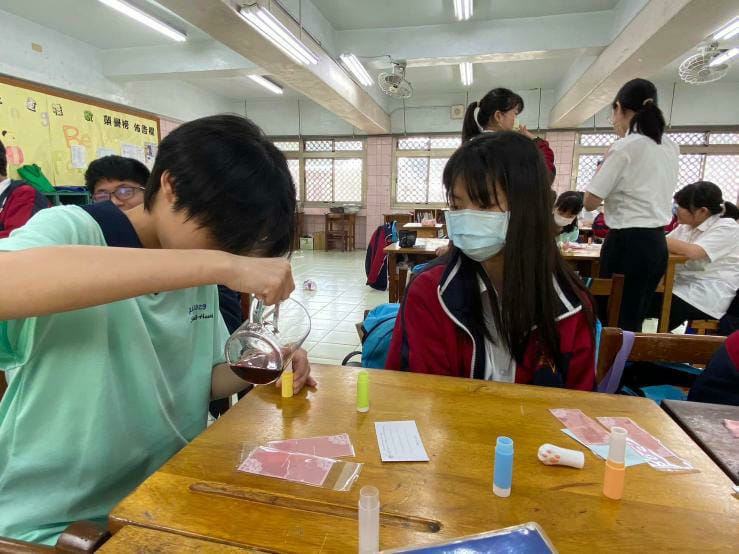

| 大家好!我叫Melody。我在Santa Laurensia学校上学,上八年级。今天我要给大家分享“基隆教育之旅”的经验。我们今年参加了去基隆教育之旅。 我的新朋友叫Lynn。她今年十四岁。她的生日是九月二十九日。她在Fu Jen Sacred Heart School学校读书。她今年上八年级。她喜欢吃蛋糕。她的爱好是看小书。她长得很漂亮。她瓜子脸，小小的眼睛。她有黑黑的直发。 我们去Ren Ai Senior Citizens’ Home。我最喜欢跟新朋友一起吃饭。我看很多人，还有我也做和学SDG。 我在基隆学很多，我很高兴有这样的经历。谢谢！  |